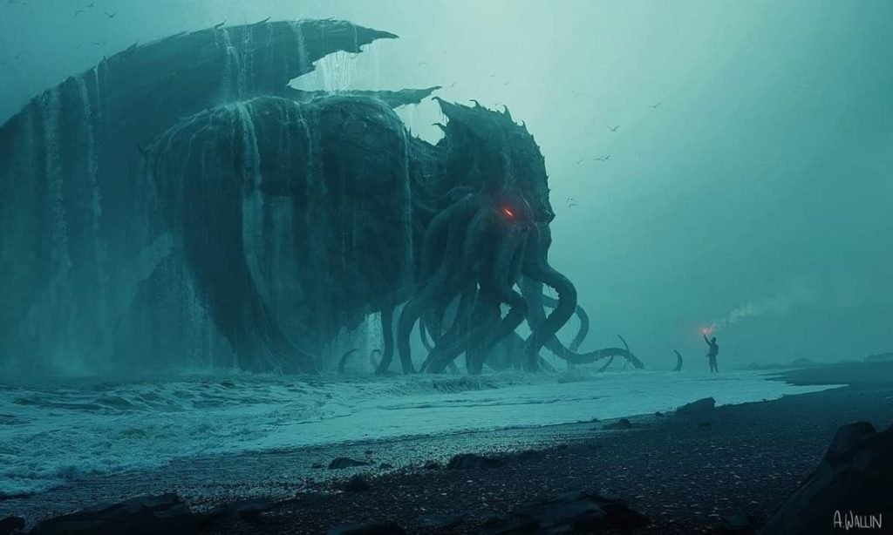

"Después de millones y millones de años el gran Cthulhu era libre otra vez."
pronunciado en español como Kazulu, o Chulu es una entidad cósmica creada por
el escritor estadounidense de terror Howard Phillips Lovecraft y representada
por primera vez en el cuento La llamada de Cthulhu, Considerado un Primigenio
dentro de las entidades cósmicas, la criatura ha aparecido desde entonces en
numerosas referencias de la cultura popular. Cthulhu es descrito como la
convergencia entre un pulpo, un dragón y una criatura de forma humanoide.

¡Comentanos!